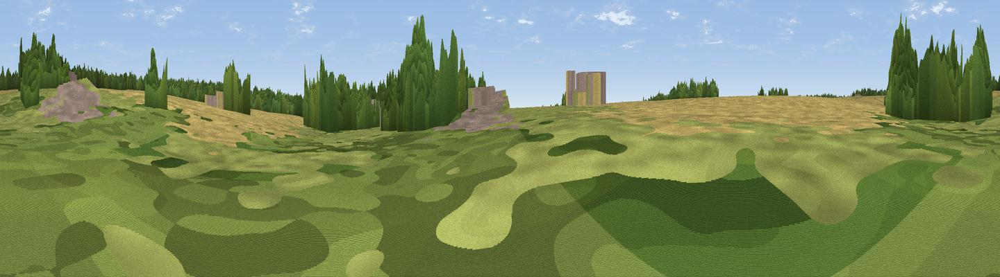

Viewpoint near Aylmerton
#45635 in England · top 99% of its area beats it · near AylmertonThe view, rendered

A 360° render of this exact spot computed from the terrain model, tree cover and land cover — summer colours, afternoon light, calibrated against photographs of famous viewpoints. Real trees, hedges and buildings will differ in detail.
The panorama
Grey silhouette: terrain skyline in each direction (720 bearings, Earth curvature and refraction included). Dashed green: skyline with trees (+15 m) and buildings (+8 m) as obstacles. Blue strip: how far the ground is visible on each bearing.
Where the view opens
Wedge length = distance to the farthest visible ground on that bearing (vegetation-aware). Rings at 10, 25 and 50 km.
What fills the view
40% cropland · 29% grassland · 23% woodland · 9% built-up
Angular shares of the visible panorama (visual magnitude), not map area. Landscape diversity 0.55 (0–1 Shannon).
Key numbers
More beautiful places nearby
The staircase of upgrades: each row has a higher view potential than everything closer. Driving times are estimates from straight-line distance, calibrated against real road routing — check an actual route before setting out.
| Place | Direction | Drive | Score |
|---|---|---|---|
| Viewpoint near Beeston Regis | NNW · 2 km | ~6 min | 62.4 |
| Incleborough Hill | NNE · 3 km | ~6 min | 66.0 |
| Beeston Hill | NNW · 4 km | ~9 min | 66.6 |
| Viewpoint near Overstrand | ENE · 6 km | ~13 min | 67.5 |
| Viewpoint near Weybourne | WNW · 8 km | ~17 min | 68.3 |
| Viewpoint near Claxby | WNW · 120 km | ~144 min | 71.5 |
| Viewpoint near Bempton | NW · 166 km | ~188 min | 72.8 |
| Broombriggs Hill | W · 168 km | ~190 min | 74.4 |
52.91223, 1.24237 · source: osm viewpoint · position refined by local search. Computed location — check access rights before visiting.